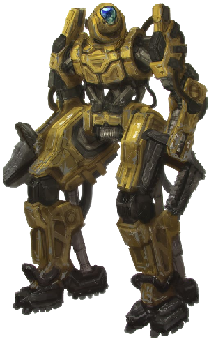
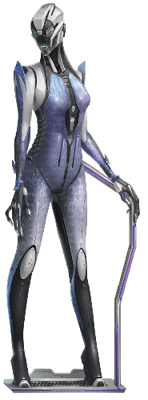
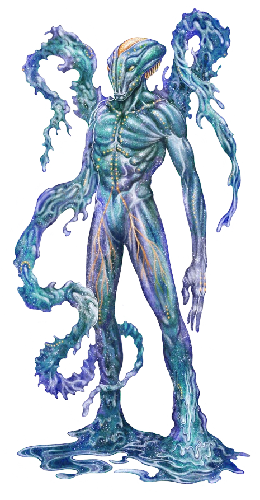
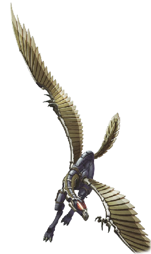
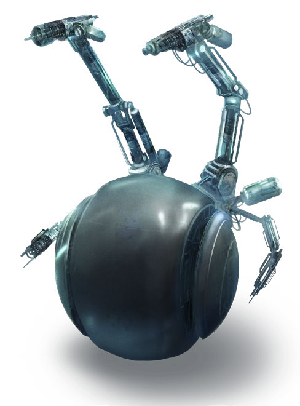
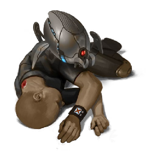
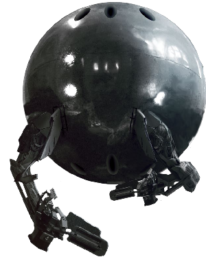

Synthmorphs
Arachnoid

Arachnoid shells mimic the shapes of spiders, termites, ants, beetles, and other arthropods. Three or four sets of pneumatic limbs are capable of rotating around their meter-long torso, and an additional set of manipulator arms near the head enables fine manipulation and tool use. Arachnoids move by walking, hopping, extending omnidirectional mini-wheels for skating movement, or by retracting their limbs and maneuvering with vectored-air thrusters in microgravity.
Arachnoid
- Cost: 6 MP • Avail: 40
- WT: 11 • DUR: 55 • DR: 110
- Insight 1, Moxie 0, Vigor 3, Flex 0
- Movement Rate: Hopper 4/12, Thrust Vector (Gas Jet) 8/40, Walker 4/20, Wheeled 8/40
- Ware: Access Jacks, Cortical Stack, Cyberbrain, Lidar, Magnetic System, Mesh Inserts, Mnemonics, Pneumatics, Puppet Sock, Retracting Limbs
- Morph Traits: Exotic Morphology (Level 3)
- Notes: Medium Frame (Armor 8/6)
Biocore

The biocore is a synthmorph with a biological brain. This design is favored by those who wish to enjoy the advantages of sleeving in a synthmorph without the risk of brainhacking or who simply dislike the idea of using a cyberbrain. It is popular with asyncs, as they retain their psi abilities. Some models feature a stylized but transparent braincase, to show off the biocore’s main feature, but others appear to be ordinary synthmorphs from the outside; only a detailed physical examination can determine that it actually contains a living brain.
Biocore
- Cost: 3 MP • Avail: 30
- WT: 7 • DUR: 35 • DR: 70
- Insight 1, Moxie 0, Vigor 0, Flex 2
- Movement Rate: Walker 4/20
- Ware: Brain Box, Cortical Stack, Lidar, Mesh Inserts, Puppet Sock
- Morph Traits: Exotic Morphology (Level 1)
- Notes: Light Frame (Armor 6/4)
Case

Cases are mass-produced robotic shells, an affordable resleeving option for the poor, though of notoriously poor quality. They are available in many varieties to suit a client’s taste. Most case morphs are anthropomorphic, with a thin framework body standing just shorter than an average human.
Case
- Cost: 0 MP • Avail: 100
- WT: 5 • DUR: 25 • DR: 50
- Insight 0, Moxie 0, Vigor 0, Flex 0
- Movement Rate: Walker 4/12
- Ware: Access Jacks, Cortical Stack, Cyberbrain, Lidar, Mesh Inserts, Mnemonics, Puppet Sock
- Morph Traits: Exotic Morphology (Level 1), Inherent Flaws
- Notes: Light Frame (Armor 6/4)
Cetus

Named after a mythological sea monster, the cetus was designed to operate in the extreme pressure and cold of deep seas as well as the atmospheric portion of habitats. It is a favored morph in the subcrustal oceans of Ceres and Europa.
Cetus
- Cost: 6 MP • Avail: 20 (70 in aquatic habs)
- WT: 8 • DUR: 40 • DR: 80
- Insight 0, Moxie 0, Vigor 2, Flex 1
- Movement Rate: Submarine 8/32, Walker 4/20
- Ware: 360° Vision, Access Jacks, Cortical Stack, Cryogenic Protection, Cyberbrain, Direction Sense, Enhanced Hearing, Enhanced Vision, Extra Limbs (1 pair), Lidar, Mesh Inserts, Mnemonics, Puppet Sock, Pressure Adaptation, Sonar
- Morph Traits: Exotic Morphology (Level 3)
- Notes: Medium Frame (Armor 8/6), 4 arms, 4 legs
Cloud Skimmer

This streamlined synthmorph is designed for exploring the atmospheres of gas giants, but its internal rocket also allows it to operate in vacuum. It can travel to and from a ship in orbit around a gas giant into the planet’s atmosphere on its own. The morph is a flattened oval that can extend up to four flexible arms. A series of gas sacs and turbofans allows it to maneuver as a microlight within atmosphere.
Cloud Skimmer
- Cost: 7 MP • Avail: 20 (40 in the outer system)
- WT: 8 • DUR: 40 • DR: 80
- Insight 1, Moxie 0, Vigor 0, Flex 2
- Movement Rate: Microlight 8/32, Thrust Vector (Rocket) 8/40
- Ware: Access Jacks, Cortical Stack, Cryogenic Protection, Cyberbrain, Direction Sense, Enhanced Vision, Extra Limbs (1 pair), Laser Link (Medium), Mesh Inserts, Mnemonics, Puppet Sock, Pressure Adaptation, Radar, Retracting Limbs, Thermogenic Protection
- Morph Traits: Exotic Morphology (Level 3)
- Notes: Heavy Frame (Armor 12/10), 4 arms
Courier

Couriers were made to soar between the many moons and habitats in the Saturnian system. They are shaped like a multi-armed chess piece, with a humanoid head and torso atop a conical metallic-hydrogen rocket. With an acceleration of up to 0.25 g, couriers can take off and land on all moons and other small bodies in the Solar System (though entering an atmosphere such as Titan’s requires heat shielding). Since propellant storage is limited, an integrated plasma sail provides alternative thrust.
Courier
- Cost: 7 MP • Avail: 30 (60 in the outer system)
- WT: 7 • DUR: 35 • DR: 70
- Insight 1, Moxie 0, Vigor 0, Flex 2
- Movement Rate: Plasma Sail 8/40, Thrust Vector (Rocket) 8/40
- Ware: Access Jacks, Cortical Stack, Cryogenic Protection, Cyberbrain, Direction Sense, Enhanced Vision, Extra Limbs (1 pair), Laser Link (Medium), Mesh Inserts, Mnemonics, Plasma Sail, Puppet Sock, Radar, Retracting Limbs
- Common Extras: Radiation Tolerance, Thermogenic Protection
- Notes: Medium Frame (Armor 8/6), 4 arms
Daitya

This massive anthropomorphic mech is used for construction work, moving giant objects, and similar heavy industrial projects. It stands just under three meters and weighs almost one ton in Earth gravity.
Daitya
- Cost: 13 MP • Avail: 30
- WT: 15 • DUR: 75 • DR: 150
- Insight 0, Moxie 0, Vigor 3, Flex 3
- Movement Rate: Walker 4/20
- Ware: Access Jacks, Cortical Stack, Cyberbrain, Digging Claws, Disassembly Tools (mounted), Hardened Skeleton, Industrial Armor (+6/+4), Lidar, Mesh Inserts, Mnemonics, Muscle Augmentation, Pneumatics, Puppet Sock, Radar, Utilimod, Weapon Mounts (2 static, 2 articulated)
- Morph Traits: Exotic Morphology (Level 3)
- Notes: Heavy Frame (Armor 12/10; 18/14 with industrial armor), Large size. Bonuses from Hardened Skeleton already incorporated.
Combat Mech Variant
This massive anthropomorphic mech is used for construction work, moving giant objects, and similar heavy industrial projects. It stands just under three meters and weighs almost one ton in Earth gravity.
Combat Mech
- Cost: 21 MP • Avail: 5
- WT: 16 • DUR: 80 • DR: 160
- Insight 0, Moxie 0, Vigor 3, Flex 3
- Movement Rate: Walker 4/20
- Ware: Access Jacks, Anti-Glare, Cortical Stack, Cyberbrain, Freezer (mounted), Heavy Combat Armor (+16/+14), Lidar, Mesh Inserts, Mnemonics, Muscle Augmentation, Particle Beam Bolter, Puppet Sock, Radar, Radar Absorbent, Railgun Machine Gun (mounted), Structural Enhancement, Stunner (mounted), Weapon Mounts (2 static, 2 articulated)
- Morph Traits: Exotic Morphology (Level 3)
- Notes: Heavy Frame (Armor 12/10; 28/24 with heavy combat armor), Large size. Bonuses from Structural Enhancement already incorporated.
Dragonfly

The dragonfly takes the shape of a meter-long flexible shell with eight wings, four manipulator limbs, and a prehensile tail. Capable of near-silent flight in Earth gravity, dragonfly bots fare even better in microgravity. Their wings operate independently and can rotate, allowing for graceful maneuvering, hovering, and tight turns.
Dragonfly
- Cost: 1 MP • Avail: 70
- WT: 5 • DUR: 25 • DR: 50
- Insight 1, Moxie 0, Vigor 1, Flex 0
- Movement Rate: Walker 2/8, Winged 8/32
- Ware: Access Jacks, Cortical Stack, Cyberbrain, Mesh Inserts, Mnemonics, Puppet Sock, Prehensile Tail, Radar, Wings
- Morph Traits: Exotic Morphology (Level 3)
- Notes: Light Frame (Armor 6/4), Small size
Fenrir

Named for the monstrous wolf of Norse legend, the fenrir is one of the most imposing combat morphs ever developed, akin to a squat, quadrupedal tank. Manufactured for the armed forces of the Hyoden city-state on Callisto, black-market blueprints and copies have inevitably turned up elsewhere. Of special note is that the fenrir is designed to be operated by up to six egos simultaneously, each handling different weapon systems and operational functions in tandem.
Fenrir
- Cost: 20 MP • Avail: 1 (5 on Callisto)
- WT: 20 • DUR: 100 • DR: 200
- Insight 0, Moxie 0, Vigor 4, Flex 2
- Movement Rate: Thrust Vector (Gas Jet) 4/12, Walker 4/20
- Ware: 360-Degree Vision, Access Jacks, Anti-Glare, Battle Laser (mounted), Cortical Stack, Cyberbrain, Enhanced Vision, Freezer (mounted), Ghostrider Modules (5), Heavy Combat Armor (+16/+14), Mesh Inserts, Microwave Agonizer (mounted), Mnemonics, Multi-Ego Controls, Radar, Railgun Sniper Rifle (mounted), Seeker Rifle (mounted), Structural Enhancement, Torch (mounted), T-Ray Emitter, Weapon Mounts (3 Articulated, 3 Internal Articulated)
- Morph Traits: Exotic Morphology (Level 3)
- Notes: Heavy Frame (Armor 12/10; 28/24 with Heavy Combat Armor), Large size. Bonuses from Structural Enhancement already incorporated.
Flexbot

Flexbots are modular and customizable, each composed of one or more modules that interlock in various shapes and configurations. Individual modules are specialized towards specific functions and also capable of transforming into a variety of shapes and mechanisms. They have 4 limbs in their default configurations. Independent modules are only the size of a large dog, but multiple flexbots can join together for larger mass operations, even taking on heavy-duty tasks such as demolition, excavation, manufacturing, construction, or robotics assembly. Flexbots can also incorporate any robot with Modular Design ware as modules.
All flexbot modules have the following stats, plus the stats for their module type (with the exception of conjurers, who use only their module stats):
All Flexbots (Except Conjurers)
- Movement Rate: Thrust Vector (Gas Jet) 8/40, Walker 4/12
- Ware: Access Jacks, Cortical Stack, Cyberbrain, Lidar, Mesh Inserts, Mnemonics, Modular Design, Puppet Sock, Shape Adjusting
- Morph Traits: Exotic Morphology (Level 3)
- Notes: Light Frame (Armor 6/4), Small size
Apiary Module
Apiary modules are carriers for nanoswarm hives.
- Cost: 3 MP • Avail: 50
- WT: 4 • DUR: 20 • DR: 40
- Insight 0, Moxie 0, Vigor 0, Flex 0
- Ware: Cleaner Swarm Hive, Fixer Swarm Hive, Guardian Swarm Hive, Engineer Swarm Hive, Nanoscopic Vision
- Common Shape Adjustments: Fractal Digits, Nanodetector, Tool Kit
- Notes: Hives may be switched for others of equivalent GP.
Aviary Module
Apiary modules are Aviary modules are bot carriers. While any bot can be integrated as a flexbot module, aviaries provide a protective enclosure for the bots and a hive to keep them repaired. They can hold 1 small bot or 5 very small bots. for nanoswarm hives.
- Cost: 2 MP • Avail: 50
- WT: 4 • DUR: 20 • DR: 40
- Insight 0, Moxie 0, Vigor 0, Flex 1
- Ware: Drone Rig, Fixer Swarm Hive
Bard Module
Bard modules are for equipped for communications and social and media events.
- Cost: 3 MP • Avail: 50
- WT: 4 • DUR: 20 • DR: 40
- Insight 0, Moxie 1, Vigor 0, Flex 0
- Ware: Laser Link (Small), Miniature Radio Farcaster, Radio Booster, QE Comm, Qubit Reservoir
- Common Shape Adjustments: Chameleon Skin, Holographic Projector, Mission Recorder, White Noise Machine
Cleric Module
Clerics are for emergency medical services.
- Cost: 2 MP • Avail: 50
- WT: 4 • DUR: 20 • DR: 40
- Insight 0, Moxie 0, Vigor 0, Flex 1
- Ware: Ego Bridge, Healing Spray Hive, Med Scanner
- Common Shape Adjustments: Specimen Container, Toolkit (Medicine: Paramedic), Utilimod
- Notes: The hive can fabricate another dose of healing spray every 2 hours.
Conjurer Module
Mini-swarmanoid that attaches to a flexbot.
- Cost: 1 MP • Avail: 50
- WT: — • DUR: 25 • DR: 40
- Insight 1, Moxie 0, Vigor 0, Flex 0
- Movement Rate: Hopper 4/12, Rotor 4/20, Walker 2/8
- Ware: 360-Degree Vision, Access Jacks, Cortical Stack, Cyberbrain, Lidar, Mesh Inserts, Mnemonics, Modular Design, Puppet Sock, Skinlink
- Morph Traits: Exotic Morphology (Level 3)
- Notes: Swarm attack (DV 1d6, ignores armor, blinding), comes with specialized conjurer hive, follows rules for swarms (▶344, EP2). Conjurer swarms do not affect a flexbot’s gestalt Movement Rate; when not disconnected they ride along on other modules.
Crafter Module
Crafters are engineer modules, specialized in construction and fabrication.
- Cost: 2 MP • Avail: 60
- WT: 4 • DUR: 20 • DR: 40
- Insight 1, Moxie 0, Vigor 0, Flex 0
- Ware: Engineer Swarm Hive, Fixer Swarm Hive
- Common Shape Adjustments: Enhanced Vision, Disassembly Tools, Fractal Digits, Nanoscopic Vision, Tool Kit, T-Ray Emitter, and Utilitool
Fighter Module
These modules are combat-oriented.
- Cost: 3 MP • Avail: 60
- WT: 6 • DUR: 30 • DR: 60
- Insight 0, Moxie 0, Vigor 1, Flex 0
- Ware: Pneumatics, Weapon Mount (2)
- Common Shape Adjustments: Enhanced Vision, Light Combat Armor, Radar, T-Ray Emitter, and ranged weapons
Rogue Module
Rogues are optimized for stealth and covert activities.
- Cost: 2 MP • Avail: 60
- WT: 4 • DUR: 20 • DR: 40
- Insight 0, Moxie 0, Vigor 1, Flex 0
- Ware: Chameleon Skin, Radar Absorbent
- Common Shape Adjustments: Dazzler, Enhanced Vision, Fiber Eye, Fractal Digits, Magnetic System, Nanoscopic Vision, T-Ray Emitter, Weapon Mount
Wizard Module
Wizard modules specialize in infosec and communications tasks.
- Cost: 2 MP • Avail: 60
- WT: 4 • DUR: 20 • DR: 40
- Insight 1, Moxie 0, Vigor 0, Flex 0
- Ware: Radio Booster, Sniffer App, Tracker App
- Common Shape Adjustments: Electrical Sense, Enhanced Vision, Laser Link, Nanodetector, Skinlink, Utilitool
Galatea

This high-end shell was designed to increase the appeal and social acceptance of synthmorphs. Galateas look expensive and their mental architecture is crafted to enhance the wearer’s personality and charm. Though many media icons have embraced this morph’s novelty, biochauvinists still view it as a monstrosity.
Galatea
- Cost: 5 MP • Avail: 50
- WT: 8 • DUR: 40 • DR: 80
- Insight 1, Moxie 2, Vigor 1, Flex 1
- Movement Rate: Walker 4/20
- Ware: Access Jacks, Cortical Stack, Chameleon Skin, Cyberbrain, Enhanced Hearing, Lidar, Mesh Inserts, Mnemonics, Puppet Sock
- Morph Traits: Exotic Morphology (Level 1)
- Notes: Light Frame (Armor 6/4)
Golem Variant
For those who need to have no choice to sleeve into a synth, but who want to appear biomorph, the golem is a solid choice.
Golem
- Cost: 6 MP • Avail: 40
- WT: 8 • DUR: 40 • DR: 80
- Insight 1, Moxie 3, Vigor 1, Flex 1
- Movement Rate: Walker 4/20
- Ware: Access Jacks, Chameleon Skin, Cortical Stack, Cyberbrain, Enhanced Hearing, Lidar, Mesh Inserts, Mnemonics, Puppet Sock, Synthetic Mask
- Notes: Medium Frame (Armor 8/6)
Gargoyle

This anthroform mobile sensor unit is designed for media, freelance journalists, forensics teams, investigators, and anyone who is regularly required to document a situation thoroughly. Gargoyles stand taller than average transhumans for better viewing. Much of their exterior surface is covered in quantum-dot camera displays.
Gargoyle
- Cost: 5 MP • Avail: 60
- WT: 6 • DUR: 30 • DR: 60
- Insight 2, Moxie 0, Vigor 0, Flex 1
- Movement Rate: Walker 4/20
- Ware: 360-Degree Vision, Access Jacks, Anti-Glare, Chem Sniffer, Cortical Stack, Cyberbrain, Enhanced Hearing, Enhanced Smell, Enhanced Vision, Lidar, Mesh Inserts, Mnemonics, Oracles, Puppet Sock, Radar, T-Ray Emitter
- Morph Traits: Exotic Morphology (Level 2)
- Notes: Light Frame (Armor 6/4)
Griefer

Griefers are disposable morphs used by trolls, vandals, and terrorists to spread chaos, harass people, antagonize the authorities, and worse. Griefers have embedded sound and holographic display systems to make their presence known. They are often equipped with hacking tools and other subversive ware, from graffiti implements and mounted sprayers to nanoswarm hives or even explosives, according to their specific purpose. Most importantly, they are built without cortical stacks, so if they are destroyed, the ego cannot be interrogated through psychosurgery. Griefers are illegal in many habitats, especially in the Planetary Consortium, but DRM-free blueprints are easy to find in many darknets, thus making them a persistent annoyance across the Solar System. in some systems. A few habitats have passed laws mandating that destroying a griefer is not considered murder, assault, or even destruction of property.
Griefer
- Cost: 0 MP • Avail: 70
- WT: 4 • DUR: 20 • DR: 40
- Insight 0, Moxie 0, Vigor 0, Flex 0
- Movement Rate: Walker 4/12
- Ware: Access Jacks, Auto-Erase, Cyberbrain, Holographic Projector, Lidar, Magnetic System, Mesh Inserts, Mnemonics, Puppet Sock
- Morph Traits: Exotic Morphology (Level 1), Inherent Flaws
- Notes: Light Frame (Armor 6/4)
Guard

Guards are disguised with a synthetic mask to blend in with biomorphs, for those people uncomfortable with dragging around hulking synthmorphs as security personnel. At a casual glance, most will take them for olympians or furies. Their enhanced senses and built-in weaponry make them effective bodyguards.
Guard
- Cost: 8 MP • Avail: 50
- WT: 9 • DUR: 45 • DR: 90
- Insight 1, Moxie 0, Vigor 3, Flex 1
- Movement Rate: Walker 4/12
- Ware: Access Jacks, Chem Sniffer, Claws, Cortical Stack, Cyberbrain, Enhanced Vision, Hand Laser, Lidar, Mesh Inserts, Mnemonics, Puppet Sock, Synthetic Mask, T-Ray Emitter
- Morph Traits: Exotic Morphology (Level 1)
- Notes: Medium Frame (Armor 8/6)
Prime Variant
Used by top-of-the-line security personnel and wealthy and powerful people.
Prime
- Cost: 10 MP • Avail: 30
- WT: 9 • DUR: 45 • DR: 90
- Insight 1, Moxie 0, Vigor 3, Flex 1
- Movement Rate: Walker 4/12
- Ware: Access Jacks, Chem Sniffer, Claws, Cortical Stack, Cyberbrain, Enhanced Vision, Guardian Nanoswarm Hive, Hand Laser, Lidar, Mesh Inserts, Microwave Agonizer (mounted), Mnemonics, Puppet Sock, Synthetic Mask, T-Ray Emitter, Weapon Mount (Internal, Static)
- Morph Traits: Exotic Morphology (Level 1)
- Notes: Heavy Frame (Armor 12/10)
Kite

Kites use their shape-adjusting composition primarily to configure into the optimal form for flight given local atmospheric conditions. Their default form is a turbofan-driven winged anthroform, light enough to fly and hover in thin atmospheres and heavy gravity. Other forms they can take include a compact and streamlined ionic mode (ideal for high speeds or maneuvering in hurricane-force winds), a butterfly- shape with extended wings (for gliding or tethered effortless station-keeping), or a winged shape to emulate local aerial life, among other options.
Kite
- Cost: 2 MP • Avail: 40 (70 in gate habs)
- WT: 4 • DUR: 20 • DR: 40
- Insight 1, Moxie 0, Vigor 0, Flex 1
- Movement Rate: Walker 4/12; Choose One: Ionic 8/40, Microlight 8/32, Thrust Vector (Turbofan) 8/40, Winged 8/32
- Ware: Access Jacks, Cortical Stack, Cyberbrain, Direction Sense, Enhanced Vision, Lidar, Mesh Inserts, Mnemonics, Puppet Sock, Radar, Shape Adjusting, T-Ray Emitter
- Morph Traits: Exotic Morphology (Level 3)
- Notes: Light Frame (Armor 6/4), Small size. Changing mobility systems takes 1d6 mins.
Fierce Kite Variant
This slightly more durable model is equipped to carry armaments and for stealth purposes, making it popular with spies, thieves, and discreet bodyguards.
Fierce Kite
- Cost: 4 MP • Avail: 30 (60 in gate habs)
- WT: 5 • DUR: 25 • DR: 50
- Insight 1, Moxie 0, Vigor 0, Flex 1
- Movement Rate: Walker 4/12; Choose One: Ionic 8/40, Microlight 8/32, Thrust Vector (Turbofan) 8/40, Winged 8/32
- Ware: Access Jacks, Cortical Stack, Cyberbrain, Direction Sense, Enhanced Hearing, Enhanced Vision, Lidar, Mesh Inserts, Mnemonics, Puppet Sock, Radar, Shape Adjusting, Stealth Coating, T-Ray Emitter, Weapon Mounts (2, Internal and Articulated)
- Morph Traits: Exotic Morphology (Level 3)
- Notes: Light Frame (Armor 6/4), Small size. Changing mobility systems takes 1d6 minutes.
Ultra Kite Variant
Ultra kites are larger humanoid-sized versions of kites. They have difficulty achieving lift in heavier gravity, so they are primarily designated for low-grav and micrograv environments.
Ultra Kite
- Cost: 4 MP • Avail: 30 (40 in gate habs)
- WT: 7 • DUR: 35 • DR: 70
- Insight 1, Moxie 0, Vigor 0, Flex 1
- Movement Rate: Walker 4/12; Choose One: Ionic 8/40, Microlight 8/32, Thrust Vector (Turbofan) 8/40, Winged 8/32
- Ware: Access Jacks, Cortical Stack, Cyberbrain, Direction Sense, Enhanced Hearing, Enhanced Vision, Lidar, Mesh Inserts, Mnemonics, Puppet Sock, Radar, Shape Adjusting, Stealth Coating, T-Ray Emitter, Weapon Mounts (2, Internal and Articulated)
- Morph Traits: Exotic Morphology (Level 3)
- Notes: Medium Frame (Armor 8/6)
Mimic

With the ability to alter shape and appearance, a mimic can disguise itself as almost any small household object, such as a briefcase, cleaning robot, furnishing, or appliance. It can also fit through small spaces and hide itself with great ease, making it ideal for infiltration and sabotage missions. In its basic form, with its limbs retracted, this morph is a simple head-sized cube. With its limbs at full extension, it can stand up to two meters tall and reach two meters away.
Mimic
- Cost: 4 MP • Avail: 30
- WT: 5 • DUR: 25 • DR: 50
- Insight 0, Moxie 1, Vigor 0, Flex 2
- Movement Rate: Walker 4/20
- Ware: Access Jacks, Chameleon Skin, Cortical Stack, Cyberbrain, Enhanced Vision, Grip Pads, Lidar, Mesh Inserts, Mnemonics, Puppet Sock, Shape Adjusting, Retracting Limbs, Skinflex, Telescoping Limbs, T-Ray Emitter
- Morph Traits: Enhanced Behavior (Patience, Level 2), Exotic Morphology (Level 3)
- Notes: Light Frame (Armor 6/4), Small size
Nautiloid

Nautiloids are a hybrid of short-range spacecraft and submersible capable of holding up to six passengers and their gear. The morph is shaped like a van-sized nautilus, with crew space in the head and shell. A cluster of tentacular limbs mounted under the observation ports in the head provide both fine and brute force manipulation. Originally created for comet and asteroid mining, the design also proved useful for oceanic exploration by gatecrashing teams and Europans.
A nautiloid’s life-support system can support its occupants for 1 week before replenishing — indefinitely if it has a source of hydrogen and oxygen.
Nautiloid
- Cost: 25 MP • Avail: 20 (40 in the Main Belt)
- WT: 40 • DUR: 200 • DR: 400
- Insight 0, Moxie 0, Vigor 3, Flex 0
- Movement Rate: Submarine 8/40, Thrust Vector (Rocket) 8/40
- Ware: Access Jacks, Autocook, Cortical Stack, Cyberbrain, Cryogenic Protection, Disassembly Tools, Emergency Bubble, Extra Limbs (2 pairs), Industrial Armor (+6/+4), Large Fabber, Life Support, Mesh Inserts, Mnemonics, Pressure Adaptation, Puppet Sock, Radar, Radiation Tolerance, Sleds (2), Sonar, Retracting Limbs, T-Ray Emitter
- Morph Traits: Exotic Morphology (Level 3)
- Common Extras: Healing Vat, Vacsuits
- Notes: Heavy Frame (Armor 12/10, 18/14 with industrial armor), Very Large size, 6 limbs
Oobleck

Also known as gloops, ooblecks are shapechanging morphs consisting of reconfigurable components in a shear-thickening liquid matrix with a soft, flexible outer skin. Though they often take on a blob-like, amorphous state, they can transform themselves into all manner of shapes, including consolidating into more rigid forms. They can ooze through openings as small as 10 centimeters in diameter. Though their shape-changing options are more limited than flexbots, they can transform more quickly.
Oobleck
- Cost: 1 MP • Avail: 30
- WT: 5 • DUR: 25 • DR: 50
- Insight 0, Moxie 0, Vigor 0, Flex 1
- Movement Rate: Ooze 2/8 (also Walker 4/12 or Roller 8/40)
- Ware: 360-Degree Vision, Access Jacks, Cortical Stack, Cyberbrain, Mesh Inserts, Mnemonics, Lidar, Modular Design, Oozeware, Puppet Sock
- Morph Traits: Exotic Morphology (Level 3)
- Notes: Armor 4/0, Small size
Opteryx

This one-meter tall synthetic dinosaur is a fast and light-weight runner, climber, and flyer. Its wings are fully functional arms equipped with claws. This morph is favored by gatecrashers and neo-avians in the dinosauridentity subculture.
Opteryx
- Cost: 4 MP • Avail: 30 (50 in gate/uplift habs)
- WT: 5 • DUR: 25 • DR: 50
- Insight 0, Moxie 0, Vigor 2, Flex 2
- Movement Rate: Walker 8/32, Winged 8/32
- Ware: Access Jacks, Claws, Cortical Stack, Cyberbrain, Enhanced Vision, Grip Pads, Lidar, Mesh Inserts, Mnemonics, Pneumatics, Puppet Sock, Prehensile Tail, Wings
- Morph Traits: Exotic Morphology (Level 3)
- Notes: Light Frame (Armor 6/4), Small size
Ornithope

Synthetic birds manufactured to appeal to neo-avians. They come in a variety of shapes and styles, from corvids and parrots to forms imitating other known birds or even fantasy winged creatures.
Ornithope
- Cost: 4 MP • Avail: 40
- WT: 6 • DUR: 30 • DR: 60
- Insight 2, Moxie 1, Vigor 0, Flex 0
- Movement Rate: Walker 2/8, Winged 8/32
- Ware: Access Jacks, Claws, Cortical Stack, Cyberbrain, Direction Sense, Enhanced Vision, Mesh Inserts, Mnemonics, Prehensile Feet, Puppet Sock, Radar, Wings
- Morph Traits: Exotic Morphology (Level 3)
- Notes: Light Frame (Armor 6/4), Small size
Blackbird Variant
When they’re seen at all, these synthmorphs resemble a matte gray neo-corvid with many odd, sharp angles. Blackbirds are consummate stealth morphs, designed to evade observation during recon or infiltration. In part due to aesthetics, they’re a favorite of neo-ravens.
Blackbird
- Cost: 5 MP • Avail: 25
- WT: 6 • DUR: 30 • DR: 60
- Insight 1, Moxie 1, Vigor 1, Flex 0
- Movement Rate: Walker 2/8, Winged 8/32
- Ware: Access Jacks, Claws, Cortical Stack, Cyberbrain, Direction Sense, Enhanced Hearing, Enhanced Vision, Mesh Inserts, Mnemonics, Prehensile Feet, Puppet Sock, Radar, Stealth Coating, Wings
- Morph Traits: Exotic Morphology (Level 3)
- Notes: Light Frame (Armor 6/4), Small size
Q-Morph

Quartz morphs, commonly called Q-morphs, are the primary shell design used for Venusian surface mining. Constructed from quartz and extremely durable alloys, Q-morphs look like squat, four-legged crabs with two pairs of arms. The lower pair of arms is designed for strength, the upper pair for precision and dexterity. This morph is exceptionally tough and capable of handling Venus’s intense surface conditions. Behavioral mods help keep the workers sleeved in these morphs content with their grueling existence.
Q-Morph
- Cost: 13 MP • Avail: 10 (40 on Venus)
- WT: 20 • DUR: 100 • DR: 200
- Insight 0, Moxie 0, Vigor 2, Flex 1
- Movement Rate: Walker 2/8
- Ware: Access Jacks, Cortical Stack, Cyberbrain, Direction Sense, Disassembly Tools (on weapon mounts), Enhanced Hearing, Extra Limbs (1 pair), Hardened Skeleton, Industrial Armor (+6/+4), Mesh Inserts, Mnemonics, Muscle Augmentation, Pressure Adaptation, Puppet Sock, Radar, Sonar, Thermogenic Protection, Weapon Mounts (2, Static)
- Morph Traits: Enhanced Behavior (Complacency, Level 2), Exotic Morphology (Level 3)
- Notes: Heavy Frame (Armor 12/10, 18/14 with industrial armor), Large size, 8 limbs. Bonus from Hardened Skeleton already incorporated.
Raptor

The raptor is a short-range space fighter. Like the courier, most of the morph is taken up by its metallic-hydrogen rocket and propellant. It can be launched from a spaceship to attack another ship or a habitat.
Raptor
- Cost: 8 MP • Avail: 10
- WT: 6 • DUR: 30 • DR: 60
- Insight 0, Moxie 0, Vigor 3, Flex 0
- Movement Rate: Roller 8/40, Thrust Vector (Rocket) 8/40
- Ware: 360-Degree Vision, Access Jacks, Cortical Stack, Cryogenic Protection, Cyberbrain, Direction Sense, Enhanced Vision, Light Combat Armor (+10/+8), Mesh Inserts, Mnemonics, Puppet Sock, Radar, Radar Absorbent, Railgun Machine Gun (mounted), Seeker Missile Launchers (2, mounted), Weapon Mount (2 Static, 1 Articulated)
- Morph Traits: Exotic Morphology (Level 3)
- Notes: Medium Frame (Armor 8/6), Large size
Reaper

The reaper is a combat morph in the form of an armored disc, so that it can turn and present a thin profile to an enemy. Four legs/manipulating arms and four weapon pods are folded inside its frame. It uses vector-thrust nozzles to maneuver in microgravity and also takes advantage of an ionic drive for fast movement over distance. Reapers are infamous due to military sims and Fall XPs; bringing one into most habitats will undoubtedly raise eyebrows if not get you arrested.
Reaper
- Cost: 12 MP • Avail: 10
- WT: 12 • DUR: 60 • DR: 120
- Insight 1, Moxie 0, Vigor 6, Flex 1
- Movement Rate: Hopper 4/20, Ionic 8/40, Thrust Vector (Gas Jet) 8/40, Walker 4/20
- Ware: 360-Degree Vision, Access Jacks, Anti-Glare, Cortical Stack, Cyberbrain, Enhanced Vision, Magnetic System, Mesh Inserts, Mnemonics, Pneumatics, Puppet Sock, Radar, Retracting Limbs, T-Ray Emitter, Weapon Mount (4, Articulated)
- Morph Traits: Exotic Morphology (Level 3)
- Notes: Heavy Frame (Armor 12/10)
Rover

Rover morphs are smaller, defense-oriented rollers loosely based on sphere morph designs. Each rover is 0.6 meters in diameter and, with its limbs retracted, has the ominous appearance of a reflective, shiny, black globe. It can extrude two manipulating arms and 2 other articulating weapon mounts equipped with a pistol and an agonizer on default models. Rovers are stealthy and highly maneuverable and so favored for bodyguard and police purposes in some areas. They are often deployed via remote control.
Rover
- Cost: 5 MP • Avail: 60
- WT: 6 • DUR: 30 • DR: 60
- Insight 0, Moxie 0, Vigor 2, Flex 0
- Movement Rate: Roller 8/40, Thrust Vector (Gas Jet) 8/40
- Ware: 360-Degree Vision, Access Jacks, Chameleon Skin, Claws, Cortical Stack, Cyberbrain, Lidar, Medium Pistol (mounted), Mesh Inserts, Microwave Agonizer (mounted), Mnemonics, Puppet Sock, Radar Absorbent, Retracting Limbs, Weapon Mount (2, Internal, Articulated)
- Common Extras: Eelware, Enhanced Vision, T-Ray Emitter
- Morph Traits: Exotic Morphology (Level 3)
- Notes: Medium Frame (Armor 8/6), Small size
Savant

Developed by brinker hardware hackers, savants feature neural-state enhancements that make them appealing to engineers, scientists, and intellectuals.
Savant
- Cost: 4 MP • Avail: 50
- WT: 7 • DUR: 35 • DR: 70
- Insight 3, Moxie 0, Vigor 1, Flex 1
- Movement Rate: Walker 4/20
- Ware: Access Jacks, Cortical Stack, Cyberbrain, Lidar, Mesh Inserts, Mnemonics, Puppet Sock
- Morph Traits: Exotic Morphology (Level 1)
- Notes: Light Frame (Armor 6/4)
Slitheroid

Slitheroid shells take the form of a humanoid torso with retractable arms atop a 2-meter-long segmented metallic snake. Slitheroids use lateral undulation to move, though they can also pull themselves along by their arms or coil, twist, and roll their bodies like a ball or hoop.
Slitheroid
- Cost: 5 MP • Avail: 50
- WT: 9 • DUR: 45 • DR: 90
- Insight 0, Moxie 1, Vigor 3, Flex 0
- Movement Rate: Roller 8/32, Snake 4/12
- Ware: Access Jacks, Cortical Stack, Cyberbrain, Enhanced Vision, Mesh Inserts, Mnemonics, Puppet Sock, Retracting Limbs
- Morph Traits: Exotic Morphology (Level 2)
- Notes: Medium Frame (Armor 8/6)
Smart Swarm

The smart swarm is a robust attempt to get more utility out of the swarmanoid design. It makes use of larger modular minidrones that can lock together into various shapes, enabling limited physical interactions and tool use.
Smart Swarm
- Cost: 5 MP • Avail: 50
- WT: — • DUR: 50 • DR: 100
- Insight 2, Moxie 0, Vigor 1, Flex 1
- Movement Rate: Hopper 4/12, Rotor 4/20, Walker 2/8
- Ware: 360-Degree Vision, Access Jacks, Cortical Stack, Cyberbrain, Lidar, Mesh Inserts, Mnemonics, Puppet Sock, Swarm Shape, Utilimod
- Morph Traits: Exotic Morphology (Level 3)
- Notes: Swarm Attack (DV 1d6, ignores armor, blinding), comes with specialized smart swarm hive. Swarms follow rules for nanoswarm/microswarms.
Spare

Spares are small, portable shells designed as a temporary replacement sleeve should your primary morph be killed/destroyed. They are common gear for gatecrashing missions. Packed as a flat 15-centimeter disc, when activated they pop into a six-limbed spherical shape. Just plug your original cortical stack in and you are ready to go. Built-in stress-management systems help survivors handle the trauma of their recent death.
Spare
- Cost: 0 MP • Avail: 80
- WT: 3 • DUR: 15 • DR: 30
- Insight 0, Moxie 1, Vigor 0, Flex 0
- Movement Rate: Walker 4/12
- Ware: Access Jacks, Cortical Stack (optional), Cyberbrain, Grip Pads, Lidar, Mesh Inserts, Mnemonics, Puppet Sock, Skinlink, Stress Control
- Morph Traits: Exotic Morphology (Level 3)
- Notes: Light Frame (Armor 6/4), Small size
Sphere

This utilitarian morph is a simple sphere one meter in diameter that rolls or hovers on thrust jets. It can extend four flexible manipulating limbs as needed. Its surface coating of quantum-dot imagers and chameleon skin enables it to see in all directions and display images and colors to emote. Given its lack of a humanoid visage, sphere cyberbrains feature enhancements to modules used in social interactions, making these morphs surprisingly personable.
Sphere
- Cost: 5 MP • Avail: 60
- WT: 8 • DUR: 40 • DR: 80
- Insight 0, Moxie 2, Vigor 0, Flex 2
- Movement Rate: Roller 8/40, Thrust Vector (Gas Jet) 8/40
- Ware: 360-Degree Vision, Access Jacks, Chameleon Skin, Cortical Stack, Cyberbrain, Extra Limbs (1 pair), Lidar, Magnetic System, Mesh Inserts, Mnemonics, Puppet Sock, Retracting Limbs
- Morph Traits: Exotic Morphology (Level 3)
- Notes: Light Frame (Armor 6/4), 4 limbs
Steel Morph

Like the galatea, this upscale shell was designed to counter biochauvinist attitudes and make synthmorphs more appealing. Where the galatea is optimized for social interaction, steel morphs provide enhanced physical capabilities for both work and recreation.
Steel Morph
- Cost: 5 MP • Avail: 50
- WT: 8 • DUR: 40 • DR: 80
- Insight 0, Moxie 1, Vigor 3, Flex 1
- Movement Rate: Walker 4/20
- Ware: Access Jacks, Cortical Stack, Cyberbrain, Lidar, Mesh Inserts, Mnemonics, Puppet Sock
- Morph Traits: Exotic Morphology (Level 1)
- Notes: Medium Frame (Armor 8/6)
Liquid Silver Variant
This variant incorporates shape-adjusting capabilities to emulate other anthroform synthmorphs. It is popular with performers and covert operatives.
Liquid Silver
- Cost: 7 MP • Avail: 25
- WT: 8 • DUR: 40 • DR: 80
- Insight 0, Moxie 2, Vigor 3, Flex 1
- Movement Rate: Walker 4/20
- Ware: Access Jacks, Cortical Stack, Cyberbrain, Hidden Compartment, Lidar, Mesh Inserts, Mnemonics, Puppet Sock, Shape Adjusting, Skinflex
- Morph Traits: Exotic Morphology (Level 1)
- Notes: Medium Frame (Armor 8/6)
Sundiver

Sundivers are made for solar research and emergency rescue operations in the sun’s corona. They are shaped as sleek 6-meter long cylinders, with a forward pair of retractable arms. They are built to survive superheated plasma and shielded against radiation. A powerful electromagnetic propulsion system allows them to skate along solar magnetic lines of force much like surya morphs.
Sundiver
- Cost: 10 MP • Avail: 10 (40 at Sol)
- WT: 12 • DUR: 60 • DR: 120
- Insight 0, Moxie 0, Vigor 0, Flex 3
- Movement Rate: Magnetic Generator 8/40, Thrust Vector (Rocket) 8/40
- Ware: Access Jacks, Anti-Glare, Cortical Stack, Cyberbrain, Enhanced Vision, Laser Link (Medium), Magnetic Generator, Medichines, Mesh Inserts, Mnemonics, Puppet Sock, Radar, Refractive Coating, Retracting Limbs, Thermogenic Protection
- Morph Traits: Exotic Morphology (Level 3)
- Notes: Heavy Frame (Armor 12/10), Large size
Swarmnoid

Swarmanoids are swarms composed of hundreds of insect-sized microbots. Each individual “bug” is capable of crawling, rolling, hopping several meters, or using nanocopter fan blades for airlift. The cyberbrain, cortical stack, and sensor systems are distributed throughout the swarm. Though the swarm can “meld” together into various loose shapes, it is incapable of physical tasks like grabbing, lifting, or holding. Individual bots are linked by radio and laser and are quite capable of interfacing with electronics.
Swarmanoid
- Cost: 3 MP • Avail: 60
- WT: — • DUR: 50 • DR: 100
- Insight 2, Moxie 0, Vigor 0, Flex 0
- Movement Rate: Hopper 4/12, Rotor 4/20, Walker 2/8
- Ware: 360-Degree Vision, Access Jacks, Cortical Stack, Cyberbrain, Lidar, Mesh Inserts, Mnemonics, Puppet Sock
- Morph Traits: Exotic Morphology (Level 3)
- Notes: Swarm Attack (DV 1d6, ignores armor, blinding), comes with specialized swarmanoid hive. Swarms follow rules for nanoswarm/microswarms.
Skulker Variant
Skulkers are a stealth design intended to infiltrate sensitive areas unseen.
Skulker
- Cost: 4 MP • Avail: 30
- WT: — • DUR: 50 • DR: 100
- Insight 2, Moxie 0, Vigor 0, Flex 0
- Movement Rate: Hopper 4/12, Rotor 4/20, Walker 2/8
- Ware: 360-Degree Vision, Access Jacks, Chameleon Skin, Cortical Stack, Cyberbrain, Lidar, Mesh Inserts, Mnemonics, Puppet Sock, Radar Absorbent
- Morph Traits: Exotic Morphology (Level 3)
- Notes: Swarm Attack (DV 1d6, ignores armor, blinding), comes with specialized smart swarm hive. Swarms follow rules for nanoswarm/microswarms.
Synth

Synths are even more humanoid than cases and of better quality. They are commonly deployed for labor-intensive tasks in environments not suited for biomorphs or for people who need a body quickly and cheaply or simply on a transient basis. Most designs are anthropomorphic, though various alternatives exist, including some based on uplift physiology.
Synth
- Cost: 3 MP • Avail: 80
- WT: 8 • DUR: 40 • DR: 80
- Insight 0, Moxie 0, Vigor 1, Flex 1
- Movement Rate: Walker 4/20
- Ware: Access Jacks, Cortical Stack, Cyberbrain, Lidar, Mesh Inserts, Mnemonics, Puppet Sock
- Morph Traits: Exotic Morphology (Level 1)
- Notes: Light Frame (Armor 6/4)
Synthaur

The synthtaur’s smart material composition allows it to switch between two pre-set configurations in a matter of seconds. The first form resembles an elegant mechanical centaur, a two-armed quadruped 1.7 meters tall. The second form is a fourarmed biped 2.4 meters tall. This morph is popular with gatecrashers who must cover a lot of terrain on foot, people exploring ruined habitats, and anyone going into dangerous and remote situations.
Synthtaur
- Cost: 6 MP • Avail: 40 (60 in gate habs)
- WT: 10 • DUR: 50 • DR: 100
- Insight 0, Moxie 1, Vigor 1, Flex 1
- Movement Rate: Walker 4/20 (biped), Walker 8/32 (quadruped)
- Ware: Access Jacks, Convertible Form, Cortical Stack, Cyberbrain, Extra Limbs (1 pair), Lidar, Mesh Inserts, Mnemonics, Pneumatics, Puppet Sock
- Morph Traits: Exotic Morphology (Level 2)
- Notes: Medium Frame (Armor 8/6), Large size
Takko

The first synthetic cephalopod design from the engineers at Feral Robot is a hardy shell custom-designed to make neo-octopi uplifts feel more at home in a synthetic body with eight functioning appendages. Though it lacks a beak and ink sacs, the takko features thrust-vector jets for microgravity propulsion.
Takko
- Cost: 6 MP • Avail: 25
- WT: 8 • DUR: 40 • DR: 80
- Insight 1, Moxie 1, Vigor 1, Flex 2
- Movement Rate: Thrust Vector (Gas Jet) 8/40, Walker 4/20
- Ware: 360-Degree Vision, Access Jacks, Chameleon Skin, Cortical Stack, Cyberbrain, Extra Limbs (3 pair), Grip Pads, Lidar, Mesh Inserts, Mnemonics, Polarization Vision, Puppet Sock
- Morph Traits: Exotic Morphology (Level 3), Limberness (Level 2)
- Notes: Light Frame (Armor 6/4)
Xu Fu

Named after a historical Chinese explorer, many gatecrashers consider xu fus the ideal exoplanet exploration synthmorph. Its main body sits atop 6 legs that end in multidirectional smart wheels for quick travel, capable of rolling in any direction and over rough terrain. For exceptionally difficult terrain, the wheels can be retracted and the xu fu can maneuver as a walker. In addition to two standard arms, it features a lower third arm for collecting samples and an upper telescoping fourth arm for reaching far distances and overseeing obstacles. All arms are retractable. Xu fus have an impressive sensor package and are ideal for surface-based scouting, investigating tunnels, and other gatecrashing tasks.
Xu Fu
- Cost: 5 MP • Avail: 50 (80 in gate habs)
- WT: 8 • DUR: 40 • DR: 80
- Insight 1, Moxie 0, Vigor 0, Flex 2
- Movement Rate: Walker 4/20, Wheeled 8/40
- Ware: 360-Degree Vision, Access Jacks, Cortical Stack, Cyberbrain, Direction Sense, Enhanced Vision, Extra Limbs (1 pair), Lidar, Mesh Inserts, Mnemonics, Puppet Sock, Radar, Retracting Limbs, Telescoping Limbs, T-Ray Emitter
- Morph Traits: Exotic Morphology (Level 3)
- Common Extras: Electrical Sense, Enhanced Hearing, Radiation Sense, Sonar
- Notes: Light Frame (Armor 6/4)